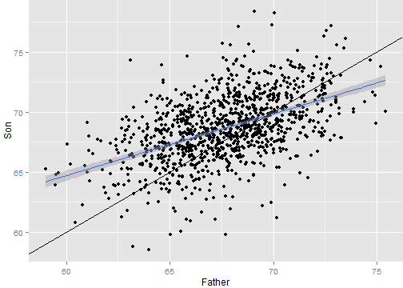
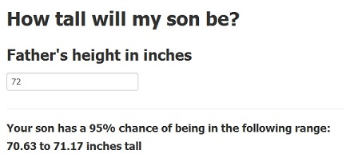

The Height Calculator
The Height Calculator
A Shiny Application
by Bridget Thrasher
Objective
This Shiny application predicts a son's height based on the height of his father
Simple, dynamic interface
Based on widely-used data
Returns 95% confidence interval
Data
The data used in this application were collected by Karl Pearson in 1903
1,078 pairs of father and son heights
Linear regression model yields statistically significant relationship between the variables:
p-value = 1.1213 × 10
-69
Prediction Model Plot
Linear regression (blue line) not 1:1 relationship (black line):

Application Usage and Outcome
Enter father's height in inches into the text box
Lower and upper bounds of 95% confidence interval of son's height prediction displayed
